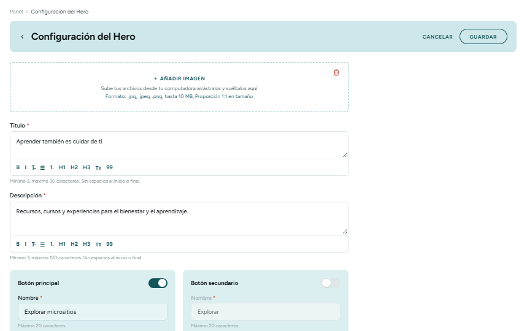
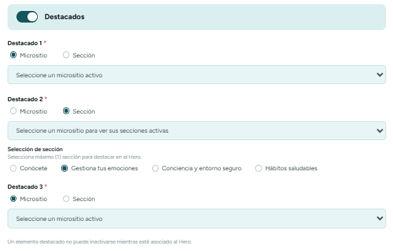
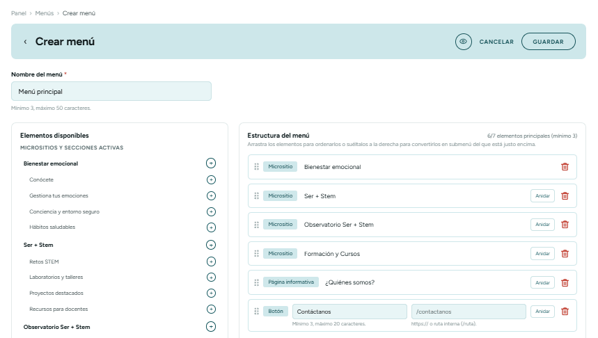
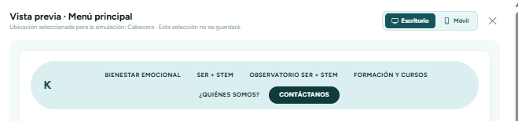
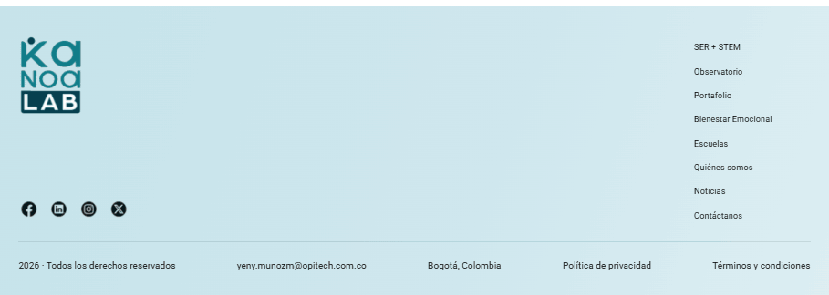
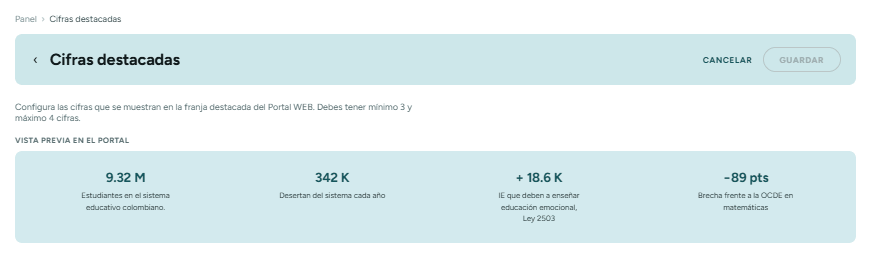
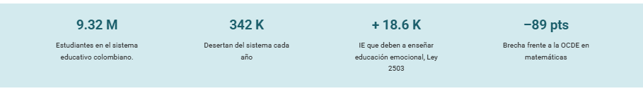
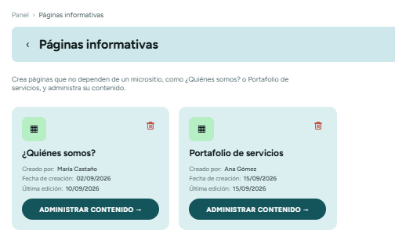
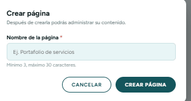
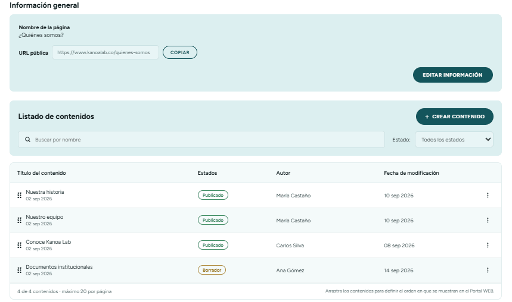

El Comunicador define el contenido principal del Hero y lo publica en el Home sin depender del área técnica.


Hasta 3 destacados: cada uno es un micrositio o una sección activa.
Un micrositio o sección destacada no se puede inactivar mientras esté en el Hero.
Los menús de cabecera y pie de página se construyen desde la administración con los elementos activos del portal.



Las cifras se configuran con su vista previa y se publican en la franja de indicadores del Home.


Páginas que no dependen de un micrositio, como ¿Quiénes somos? o Portafolio de servicios.


